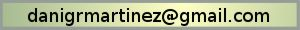
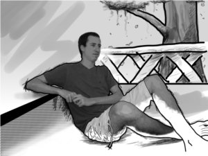

- Indice de pagina
- 1. ¿Sabías que...?
- 1.1. La web a tu gusto
- 1.2. Animaciones en flash
- 2. Sobre los creadores
- 2.1. Daniel Guerrero Martínez
- 2.2. Sergio Rodríguez Lumley
Acerca de la web
¿Sabías que...?
La web a tu gusto
Puedes cambiar el aspecto de la web pulsando sobre los botones arriba a la derecha del todo de la web.
Animaciones en flash
Las animaciones están diseñadas para visualizarlas sin necesidad de realizar ninguna acción (salvo algunas que son interactivas). Aunque se ha medido el tiempo necesario para leer el texto en cada una de ellas, no todos somos igual de rápidos, a veces resulta ser demasiado rápido. Para la gente que quiere leer con más detenimiento, cada vez que aperece texto para leer, aparecen dos botones para controlar la animación.
Cuando aparece, por defecto, siempre están en Play. Sin embargo con pulsar sobre el botón de Pause la animación dejará de avanzar.

Si se deja un tiempo pausado, comenzará a cambiar de color, solo para alertar de que está pausado, pero no se reproducirá hasta que se pulse sobre el botón de play o en cualquier otra parte de la pantalla. Para más facilidad, si se mantiene el botón de pausa y se hace click sobre cualquier parte de la animación, esta continuará, pero la siguiente vez que aparezca texto, comenzará con el botón de pause pulsado. Esto significa que si piensa leer la animación completa atentamente, pulse sobre pause al comenzar y para continuar haga click en cualquier parte de la animación (menos en el botón de Play), así se pausará automáticamente con cada texto.
Sobre los creadores
Esta web al completo, tanto el diseño, como el código y el contenido (textual, gráfico y animado) ha sido creado por nosotros. Las secciones de ayuda contienen referencias a las páginas web de las que se ha extraído información. ¿Y quiénes somos nosotros? Nosotros somos Daniel Guerrero Martínez y Sergio Rodríguez Lumley, ambos estudiantes de la Universidad de Granada, contratados por el departamento de Lenguajes y Sistemas Informáticos (LSI) en prácticas de empresa, supervisado por Jose Miguel Mantas Ruiz, durante el año 2010.
¿Quieres saber algo más de nosotros?
Daniel Guerrero Martínez
Nacido el 24 de Mayo de 1988, Daniel es natural de la ciudad de Granada (España).
Daniel se ha encargado de montar toda la infraestructura que soporta la web, así como investigar en nuevas tecnologías para ayudar al apoyo docente (MPE, TAU). Utilizando los estándares más modernos, ha capacitado la web con la tecnología PHP más moderna (en el momento), habilitando a su vez la retrocompatibilidad con versiones más antiguas. Utilizándolo, ha creado una estructura de ficheros y directorios basados en simples archivos de texto, que nuestro propio intérprete lee y representa en HTML, facilitando enormemente la tarea de documentar y crear nuevas páginas. Para posibilitar un diseño excepcional (que no significa que lo sea), proveyó una hoja de estilos basada en el estándar, aún por definir, CSS3. Sin embargo los elementos fundamentales se basan en CSS2.1, con lo que cualquier navegador que cumpla con ellos puede visualizar la página correctamente (Véase el caso de Internet Explorer 8). Para el código en Javascript ha utilizado JQuery, una de las bibliotecas de Javascript más completas para web, así como compatible con el máximo número de navegadores.
A parte de construir toda la infraestructura, también ha escrito los códigos de base y solución para todos los tutoriales, así como algunos códigos de ejemplo para la ayuda.
Dirección de contacto
Sergio Rodríguez Lumley
Nacido el 9 de Julio de 1988 en Málaga (España).
Sergio se ha encargado del diseño, contenido y traducción, así como investigar un entorno integrado para crear programas paralelos (Integración con Eclipse). Salvo en el caso de las animaciones en Flash, el resto de tecnologías de creación y uso utilizadas son libres y abiertas. En el caso de las animaciones, éstas se pueden visualizar con reproductores libres de Flash (Gnash, por ejemplo). Tanto las imágenes como el diseño web han sido todas creadas con GIMP 2.6, para crear un diseño uniforme, se han creado plantillas para todos los tipos de botones, imágenes de animación y fondo de documentos. El objetivo ha sido tener una web con un estilo simple, con poca carga visual, a la vez que atractivo, adornado con curvas y colores. El esquema de colores utilizado ha sido lo más monótono posible (Verde, blanco y gris claro, o bien verde, blanco y negro), de forma que la separación de las secciones y el destacado del contenido se hace mediante el grosor, borde, contraste y brillo (elementos fundamentales que toda persona, discapacitada o no, puede distinguir). Los documentos de ayuda online se encuentran también disponibles en formato PDF, para facilitar instalaciones en equipos sin acceso online, su conversión se ha hecho con OpenOffice.
Para la creación de las animaciones se ha utilizado Adobe Flash CS4, en las cuales se ha creado una plantilla con elementos comúnes a todas las animaciones (cuadro de ayuda, fondo, colores, botones de reproducción y pausa, etc).